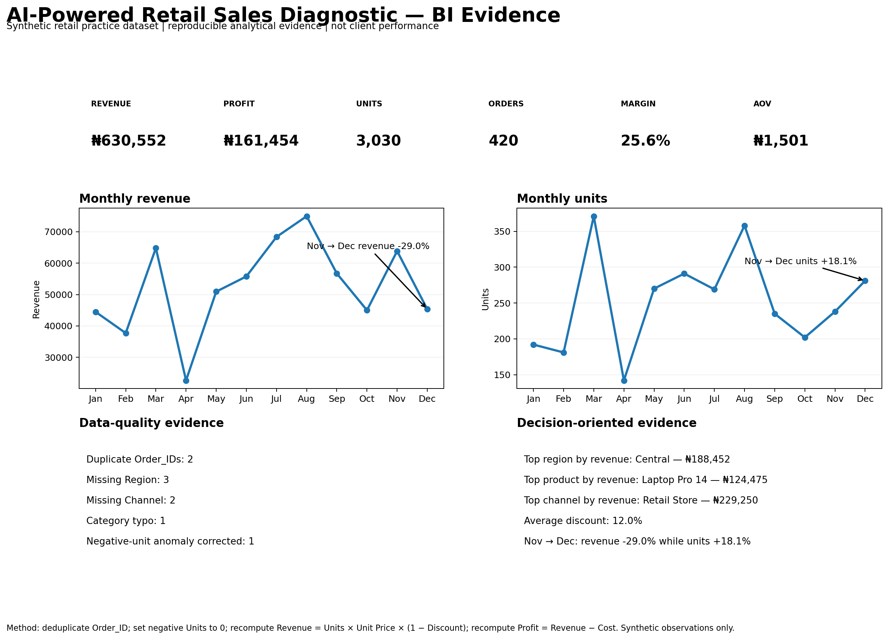

Diagnose performance
Revenue, margin, KPI, segmentation, and reporting analysis that explains what changed and where to look next.
DATA & QUANTITATIVE ANALYST
I use business analytics, quantitative modelling, financial analysis, and AI-assisted research workflows to move from an ambiguous question to validated evidence, clear trade-offs, and an actionable recommendation.
Public proof: reproducible GitHub repositories, documented methods, synthetic-data disclosures, and explicit QA boundaries.
WHAT I SOLVE
The work below is designed around decisions: where revenue is leaking, whether a KPI can be trusted, how risk should be segmented, and how an AI workflow should be measured before it is relied upon.
Revenue, margin, KPI, segmentation, and reporting analysis that explains what changed and where to look next.
Forecasts, risk segments, scenarios, unit economics, break-even, and sensitivity analysis for structured decisions.
Data checks, reconciliation, documented assumptions, and reproducible workflows that make outputs easier to trust.
AI-assisted research and extraction evaluated for accuracy, completeness, traceability, consistency, cost, and failure modes.
SELECTED WORK
These are public portfolio projects. Where a repository uses synthetic or illustrative data, that limitation is stated rather than presented as client impact.
Decision question: Why can revenue fall while units sold increase?
Moves from data-quality checks and KPI construction through decomposition, segmentation, anomaly detection, and a decision-oriented diagnosis.

Decision question: How can borrower risk be modelled and translated into usable rating bands?
Probability-of-default modelling with statistically structured FICO buckets and documented reproducibility.
Decision question: What happens to contribution, break-even, and ROI when price, volume, or cost changes?
Connects commercial assumptions to contribution margin, break-even, ROI, and sensitivity analysis.
Decision question: How can assumptions, scenarios, and sensitivities be made explicit in planning?
Forecasting and scenario management for FP&A-style decisions, with model checks and limitations documented.
Decision question: Can a dashboard or KPI be trusted before it reaches a decision-maker?
Reusable schema, missingness, duplicate, business-rule, integrity, and KPI-reconciliation controls with PASS / REVIEW / FAIL states.
Decision question: How should AI-assisted research quality be measured before reliance?
Evaluates accuracy, completeness, traceability, consistency, latency, cost, and failure patterns; the repository states it does not measure a deployed AI system.
PROOF STATUS
The portfolio distinguishes what is publicly reproducible today from what requires permissioned files, live dashboards, or observed business results.
Source code, documentation, assumptions, validation logic, and limitations are available through the linked GitHub repositories.
Review the public evidenceA portfolio-ready static dashboard artifact now shows KPI cards, monthly trends, data-quality findings, and a decision narrative for the synthetic retail project.
View the BI evidenceThe professional CV is available for download. The retail case now reports independently recalculated synthetic metrics and clearly labels them as non-client outcomes.
Download the CVHOW I WORK
The differentiator is not a long tool list. It is a disciplined path from question to recommendation, with assumptions and limitations visible.
Define the decision, metric, grain, and constraints.
Understand the source, schema, coverage, and definitions.
Test quality, assumptions, reconciliations, and edge cases.
Quantify drivers, patterns, scenarios, and uncertainty.
Separate observed facts from interpretation and inference.
Connect the evidence to practical next actions and limits.
NEXT STEP
I’m open to remote Data Analyst, BI Analyst, Quantitative Analyst, research, and analytics project opportunities. Send the decision, data context, or role brief—not just a tool list—and I can discuss the right analytical starting point.